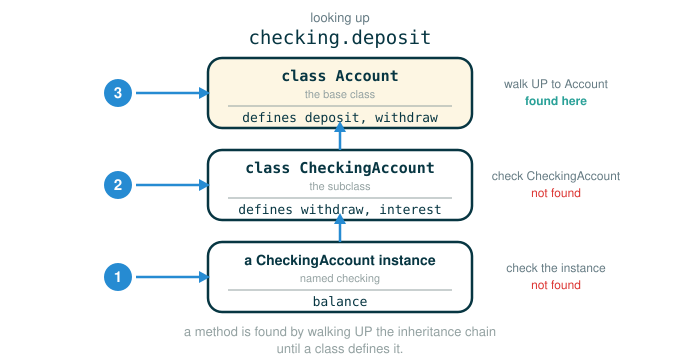

2.5 Inheritance, Interfaces, and Account Specialization
So far you can build one kind of object at a time: an Account is an Account, and that is the end of the story. Real programs are rarely that tidy. You usually have several kinds of object that are mostly the same and differ in just a few places. A checking account is still a bank account. It has a balance, you deposit into it, you withdraw from it. It just charges a small fee on every withdrawal and pays a lower interest rate.
By the end of this lesson you will be able to do five things. First, define a new class that inherits from an existing one, so you only have to write down what is different. Second, explain the difference between a base class and a subclass, and decide when inheritance is the right tool. Third, override a method in a subclass and still reuse the original by calling an ancestor method explicitly. Fourth, trace how Python looks up an attribute by walking from the instance up through the chain of classes. Fifth, write code against an interface so that it keeps working when someone adds a new kind of object later.
The one habit that ties this together: when you specialize, write only the difference. Everything you do not mention is inherited unchanged.
A Real-World Analogy
Think about job titles at a company. There is a general role called "employee." Every employee has a name, badges into the building, and gets paid. Now add a more specific role: "salaried manager." A salaried manager is still an employee, so they still have a name, still badge in, still get paid. But a manager has a few extra rules: they also run a team, and maybe they get paid on a different schedule.
You would not re-explain the whole employee handbook to describe a manager. You would say: "A manager is an employee, plus these three differences." That is exactly what inheritance does. The general role is the base class. The specific role is the subclass. The subclass keeps everything from the base class and only writes down what makes it special.
We organize ideas this way all the time:
vehicle
bicycle
car
bus
account
checking account
savings accountThe more specific thing keeps most of the behavior of the general thing, then changes the parts that make it special. In Python, this relationship is called inheritance.
The Base Account Class
Before we can specialize an account, we need the full account to specialize. Here is the complete Account class, including docstrings for the class and its methods. This is the version every later example builds on.
# (1)
class Account:
"""A bank account that has a non-negative balance."""
interest = 0.02
def __init__(self, account_holder):
self.balance = 0
self.holder = account_holder
def deposit(self, amount):
"""Increase the account balance by amount and return the new balance."""
self.balance = self.balance + amount
return self.balance
def withdraw(self, amount):
"""Decrease the account balance by amount and return the new balance."""
if amount > self.balance:
return 'Insufficient funds'
self.balance = self.balance - amount
return self.balance
This class gives every account:
- an instance attribute
balance, created in__init__and starting at0 - an instance attribute
holder, the name of the account owner - a class attribute
interest, shared by all accounts, equal to0.02 - a method
deposit, which increases the balance and returns it - a method
withdraw, which decreases the balance and returns it, refusing if the funds are insufficient
Hold onto the idea that interest is a class attribute: it lives on the class itself, so by default every Account instance sees the same 0.02. That detail is exactly what a subclass will change.
The Behavior We Want From a Checking Account
A checking account should behave like an account, with two differences: a lower interest rate, and an extra charge of one dollar on each withdrawal. Here is the target behavior, shown as an interactive session exactly as the original text demonstrates it. Read it as a goal, not as code you can run yet — CheckingAccount does not exist until code (3) below.
>>> ch = CheckingAccount('Spock')
>>> ch.interest # Lower interest rate for checking accounts
0.01
>>> ch.deposit(20) # Deposits are the same
20
>>> ch.withdraw(5) # withdrawals decrease balance by an extra charge
14The interest came back as 0.01, not the 0.02 an ordinary account would report. The deposit of 20 behaved exactly like a normal account. The interesting line is the withdrawal: you asked to take out 5, but the balance dropped from 20 to 14. That is a drop of 6, not 5. Here is why, by hand:
starting balance after deposit: 20
requested withdrawal: 5
checking account charge: 1
total removed: 6
remaining balance: 14The extra one dollar is the whole point of a checking account. Our job for the rest of the lesson is to build a class that produces this behavior while reusing as much of Account as possible.
Base Classes and Subclasses
When two classes differ only in their amount of specialization, we give the relationship names. The general class is the base class. The specialized class is the subclass.
Account base class
CheckingAccount subclassYou will hear other words for the same two roles. They all mean exactly the same thing:
base class parent class, superclass
subclass child class, derived classA subclass inherits the attributes of its base class, but may override certain attributes, including certain methods. With inheritance you only specify what is different between the subclass and the base class. Anything you leave unspecified in the subclass is automatically assumed to behave just as it would for the base class.
Inheritance also carries meaning in our object metaphor. It is meant to represent an is-a relationship, which you should contrast with a has-a relationship.
A CheckingAccount is an Account. is-a -> use inheritance
A Bank has a list of accounts. has-a -> use an attributeA checking account is a specific type of account, so having CheckingAccount inherit from Account is an appropriate use of inheritance. A bank, on the other hand, manages a list of accounts. A bank should not inherit from Account; it should store account objects as an instance attribute. Inheritance is for specialization, not for "contains."
Defining a Subclass
You specify inheritance by placing an expression that evaluates to the base class in parentheses after the class name. The full CheckingAccount implementation is short, because we only write the differences:
# (2)
class CheckingAccount(Account):
"""A bank account that charges for withdrawals."""
withdraw_charge = 1
interest = 0.01
def withdraw(self, amount):
return Account.withdraw(self, amount + self.withdraw_charge)
The class header is the one piece of new syntax, so read it one token at a time:
class CheckingAccount(Account):
├─ class ............. begins a class definition
├─ CheckingAccount ... the name of the new class
├─ ( ................. begins the list of base classes
├─ Account ........... the base class to inherit from
├─ ) ................. ends the list of base classes
├─ : ................. begins the class body (the suite below)
└─ defines a class CheckingAccount that inherits every attribute of AccountThe parentheses after the class name do not mean "call Account." With a class header they mean "inherit from Account." That is the same punctuation doing a different job, which is exactly the kind of thing Python expects you to read carefully rather than guess at.
What the Subclass Changes, and What It Inherits
Inside the body, CheckingAccount writes down only three things:
withdraw_charge = 1 a new class attribute, unique to CheckingAccount
interest = 0.01 a class attribute that overrides Account's 0.02
withdraw(self, amount) a method that overrides Account's withdrawTo override means: provide a more specific version of a name so that Python finds it first.
If Python looks for withdraw on a CheckingAccount instance,
it uses the CheckingAccount version before the Account version.Everything not listed is inherited unchanged. CheckingAccount does not define __init__, so creating one runs Account.__init__, which sets balance to 0 and stores the holder. CheckingAccount does not define deposit, so it uses Account.deposit. Overriding replaces only the one name you redefine; it does not throw away the rest of the base class.
Calling an Ancestor Method
Look closely at the new withdraw. It does not rewrite the insufficient-funds check or the balance update. Instead it adds the charge to the amount and hands the work to the original withdraw from Account:
return Account.withdraw(self, amount + self.withdraw_charge)Even though CheckingAccount overrode withdraw, the overridden method is still reachable through the base class object Account. We use that to reuse the parent's logic. Break the line into tokens:
return Account.withdraw(self, amount + self.withdraw_charge)
├─ return ................... hands back the value of the call as this method's result
├─ Account.withdraw ......... looks up the original withdraw function on the base class
├─ ( ........................ begins the arguments
├─ self ..................... passes the instance explicitly, because Account.withdraw is a plain function here
├─ , ........................ separates the arguments
├─ amount + self.withdraw_charge ... the charged amount: the requested amount plus the per-withdrawal fee
├─ ) ........................ ends the arguments
└─ evaluates to the parent withdrawal applied to (amount + charge), e.g. removing 6 when amount is 5Two parts of that line deserve a second look.
First, why pass self explicitly? When you write checking.withdraw(5), Python automatically supplies checking as the first argument. But Account.withdraw reached through the class is just a plain function, not a bound method, so nobody fills in the first argument for you. You must pass self yourself. This is the same idea you saw earlier with Account.deposit(spock_account, 1000).
Second, why self.withdraw_charge and not CheckingAccount.withdraw_charge? The two would give the same answer here. But a class that inherits from CheckingAccount later might override the withdrawal charge with a different value. Looking the charge up on self means this withdraw will find whatever value is correct for the actual object, including a future subclass's value. Looking it up on CheckingAccount would lock in 1 forever. Reaching through self keeps the door open.
Here is the arithmetic when amount is 5:
amount + self.withdraw_charge
5 + 1
6So the parent withdrawal removes 6 from the balance, which is exactly the 20 -> 14 drop you saw in the target behavior.
A Bridge: A Tiny Version You Can Check by Hand
Before running the official transcript, build the same idea on a smaller example you can verify in your head. Suppose a base Greeter says hello plainly, and a LoudGreeter is a Greeter that reuses the base greeting and then adds emphasis.
# (3)
class Greeter:
def greet(self, name):
return 'Hello, ' + name
class LoudGreeter(Greeter):
def greet(self, name):
return Greeter.greet(self, name) + '!!!'
g = LoudGreeter()
g.greet('Sam')
Walk it by hand. g is a LoudGreeter. Python looks for greet on g, does not find an instance attribute, finds greet on LoudGreeter, and runs it. That method calls Greeter.greet(self, name), which returns 'Hello, Sam', and then concatenates '!!!'. The final value is:
'Hello, Sam!!!'That is the entire pattern of CheckingAccount.withdraw with nothing to distract you: override the method, but reuse the base version by calling it through the parent class and passing self. Now the account version will read the same way.
Using the Subclass
Here is the official session that exercises CheckingAccount, exactly as the original text shows it:
>>> checking = CheckingAccount('Sam')
>>> checking.deposit(10)
10
>>> checking.withdraw(5)
4
>>> checking.interest
0.01Three results, three different sources. The deposit of 10 came from an inherited method. The withdrawal returned 4 because 5 plus the one-dollar charge is 6, and 10 - 6 is 4. The interest returned 0.01 because the subclass overrode that class attribute.
Now trace how Python finds the deposit method, because this is the lookup rule you will be tested on. To look up a name in a class, Python uses a recursive procedure:
The diagram below shows that search walking from the instance up through the chain of classes until it finds the method.

checking.deposit
├─ look for deposit as an attribute of the instance checking ... not found
├─ look for deposit in the class CheckingAccount ............... not found
├─ look for deposit in the base class Account ................. found: a function
└─ evaluates to a bound method, with self bound to checkingIn words: if the name is an attribute of the class, return its value; otherwise, look it up in the base class, if there is one. Because deposit is a function found in a class for the checking instance, the dot expression evaluates to a bound method. Calling that bound method with 10 runs deposit with self bound to the checking object and amount bound to 10.
One subtle point that trips people up: the class of an object stays constant throughout. Even though deposit was found in the Account class, it is called with self bound to an instance of CheckingAccount, not of Account. Method lookup and self binding are separate ideas — Python may walk up to Account to find the function, but self is still the original CheckingAccount object.
A Method-Dispatch Trace
It is worth slowing down on the withdrawal, because two methods cooperate. Suppose the balance is 10 and you call checking.withdraw(5).
checking.withdraw(5)
├─ look for withdraw on instance checking ......... not found
├─ look for withdraw in CheckingAccount ........... found: use this one (it overrides Account's)
├─ run CheckingAccount.withdraw with self=checking, amount=5
│ └─ compute amount + self.withdraw_charge -> 5 + 1 -> 6
│ └─ call Account.withdraw(checking, 6)
│ ├─ is 6 > self.balance (10)? ...... no
│ ├─ self.balance = 10 - 6 .......... self.balance becomes 4
│ └─ return self.balance ............ returns 4
└─ the overriding method returns 4Notice the lookup found the overriding withdraw in CheckingAccount and stopped there. That method then deliberately reached back into Account to reuse the safe balance logic, passing the charged amount. Two methods, one object, and self is checking the entire time.
Interfaces
It is extremely common in object-oriented programs for different types of objects to share the same attribute names. An object interface is a collection of attributes and conditions on those attributes. For accounts, the interface is roughly:
balance an attribute holding the current balance
deposit(amount) a method that takes a numerical amount
withdraw(amount) a method that takes a numerical amountBoth Account and CheckingAccount implement this interface. Inheritance specifically promotes this kind of name sharing. In some languages, such as Java, you must explicitly declare that a class implements an interface. In others, including Python, Ruby, and Go, any object with the right names implements the interface — there is no separate declaration.
The practical payoff: the parts of your program that use objects, rather than implement them, are most robust to future change if they make no assumptions about object types and instead rely only on attribute names. Use the object abstraction; do not assume anything about how it is built.
A Good Interface-Based Function
Suppose you run a lottery and want to deposit five dollars into each of a list of winning accounts. This implementation assumes nothing about the type of each account — only that each one has a deposit method:
# (4)
def deposit_all(winners, amount=5):
for account in winners:
account.deposit(amount)
The body is a single loop. Read the loop header as tokens:
for account in winners:
├─ for ......... begins a loop that repeats once per item
├─ account ..... the loop variable, bound to each item in turn
├─ in .......... separates the loop variable from the source
├─ winners ..... the sequence of objects being traversed
├─ : ........... begins the loop body (the indented call)
└─ runs the body once for each object in winners, binding account to itBecause the body calls account.deposit(amount) through the object, each object decides for itself which deposit to run. Hand this function a list of plain Account objects and it works. Hand it a list of CheckingAccount objects, or some future account class, and it still works — as long as the object satisfies the account interface.
A Brittle Implementation
Now compare a version that breaks the abstraction barrier by assuming a particular class:
# (5)
def deposit_all(winners, amount=5):
for account in winners:
Account.deposit(account, amount)
This version hard-codes Account.deposit. It reaches past the object and calls a specific class's method directly. For deposits it happens to give the same answer, because no account class overrides deposit. But the moment some account type overrides the method it should call, this version ignores that override and runs the base behavior anyway. It assumes an implementation instead of using the interface.
The safe form is always the same:
account.deposit(amount) lets the object choose its own deposit behavior
Account.deposit(account, amount) forces the base behavior, ignoring overridesLet the object decide. That single habit is what keeps interface-based code working as a system grows.
⚠Common Beginner Traps
The first trap is using inheritance for every relationship. Inheritance models an is-a relationship. A bank has accounts; it is not an account, so a bank should hold accounts in an attribute, not inherit from Account.
The second trap is thinking an inherited method changes self into the base class. It does not. When checking.deposit(10) runs Account.deposit, self is still the CheckingAccount object. Lookup walks up the chain; self does not.
The third trap is forgetting to pass self when you call an ancestor method through the class. Account.withdraw(self, amount + self.withdraw_charge) must pass self explicitly, because a method reached through the class is a plain function with no automatic first argument. Drop the self and you get TypeError: Account.withdraw() missing 1 required positional argument: 'amount', because the charged amount lands in the self slot and nothing fills amount.
The fourth trap is reaching for CheckingAccount.withdraw_charge inside the method instead of self.withdraw_charge. Using self lets a future subclass override the charge and still have this method find the right value.
The fifth trap is assuming overriding replaces the whole base class. It replaces only the one name you redefine. CheckingAccount.withdraw overrides Account.withdraw, but CheckingAccount still inherits deposit, __init__, and everything else you did not mention.
The sixth trap is hard-coding a base-class call where object dispatch belongs. account.deposit(amount) respects whatever class the object actually is; Account.deposit(account, amount) assumes one specific implementation.
✓Check Your Understanding
- Why is
CheckingAccounta subclass ofAccountrather than the other way around? - Which method does
checking.deposit(10)actually run, and how does Python find it? - A fresh
CheckingAccountrunsc.deposit(8)and thenc.withdraw(8). What does thewithdrawcall return, and what isc.balanceafterward? - Why does
CheckingAccount.withdrawcallAccount.withdraw(self, amount + self.withdraw_charge)instead of recomputing the balance itself? And why passself? - Why use
self.withdraw_chargerather thanCheckingAccount.withdraw_chargeinside the method? - Why is
account.deposit(amount)better thanAccount.deposit(account, amount)insidedeposit_all?
Show the answers
- A checking account is a specialized kind of account: it keeps the whole account interface and changes only the interest rate and withdrawal behavior. The general thing is the base class and the special case is the subclass, so
Accountis the base andCheckingAccountis the subclass. - It runs
Account.deposit, inherited from the base class. Python looks fordepositon the instance (not found), then onCheckingAccount(not found), then onAccount(found), and produces a bound method withselfbound tochecking. - The
withdrawcall returns'Insufficient funds', andc.balancestays8.CheckingAccount.withdrawadds the one-dollar charge to make the charged amount9, then callsAccount.withdraw(c, 9); since9is greater than the balance8, the base method refuses and leaves the balance unchanged. - It reuses the parent's insufficient-funds check and balance update after adding the fee, so that logic is written once. It must pass
selfexplicitly becauseAccount.withdrawreached through the class is a plain function with no automatic first argument. - Looking the charge up on
selflets a future subclass ofCheckingAccountoverridewithdraw_chargeand have this method find the new value. NamingCheckingAccount.withdraw_chargewould lock in the original1. - Calling through the object respects the object's actual class and any overrides, so the code keeps working for any object that satisfies the account interface. The hard-coded
Account.depositassumes one implementation and ignores overrides.
§Summary
Inheritance lets one class specialize another, so you write down only what is different. A subclass inherits every attribute of its base class but may override selected attributes and methods; anything left unspecified behaves as it does in the base class. Use inheritance for is-a relationships and a stored attribute for has-a relationships. To resolve a name, Python looks on the instance, then walks up the chain of classes, returning the first match — yet the object bound to self stays the same throughout, even when the method body was found in a base class. An overridden method is still reachable through the base class object, which lets a subclass reuse parent logic, as CheckingAccount.withdraw does by calling Account.withdraw(self, amount + self.withdraw_charge). Finally, an interface is a set of shared attribute names; code that depends only on the interface, calling account.deposit(amount) rather than Account.deposit(account, amount), keeps working as new kinds of objects are added.
▶Step-Through Checkpoint
This program is the lesson in one place: the full base class, the subclass that writes only the differences, and a checking account that takes a deposit and a withdrawal. Watching it draws the environment diagram the machine is really building: the checking instance sits in memory ("on the heap" just means the region where objects live) with a stored link up to its class CheckingAccount and from there up to the base class Account — the very chain that method lookup walks. So when checking.withdraw(5) runs, lookup finds the override in CheckingAccount, whose frame stays open and calls Account.withdraw in a nested frame, while self stays bound to that one CheckingAccount object the whole time. Before you step through the block below, write down three predictions. Don't worry about getting these exactly right — they're just to make the step-through more interesting, and the answer to each is spelled out right after.
- How many local frames will open over the whole run, counting every call the three bottom lines set in motion?
- Which names will be stored inside the
checkingobject itself when the last line finishes? - At the moment the line that changes
self.balanceruns for the withdrawal, has the frame forCheckingAccount.withdrawalready closed, or is it still open, waiting?
# (6)
class Account:
"""A bank account that has a non-negative balance."""
interest = 0.02
def __init__(self, account_holder):
self.balance = 0
self.holder = account_holder
def deposit(self, amount):
"""Increase the account balance by amount and return the new balance."""
self.balance = self.balance + amount
return self.balance
def withdraw(self, amount):
"""Decrease the account balance by amount and return the new balance."""
if amount > self.balance:
return 'Insufficient funds'
self.balance = self.balance - amount
return self.balance
class CheckingAccount(Account):
"""A bank account that charges for withdrawals."""
withdraw_charge = 1
interest = 0.01
def withdraw(self, amount):
return Account.withdraw(self, amount + self.withdraw_charge)
checking = CheckingAccount('Sam')
checking.deposit(10)
checking.withdraw(5)
Step through it one line at a time and check each prediction as the frames appear. You should have counted four local frames: the first two are inherited machinery, Account.__init__ setting balance to 0 and deposit found in Account, and the final call opened two more, one inside the other, because the withdraw found in CheckingAccount called back into Account.withdraw. That outer frame stayed open, waiting, while the inner one changed self.balance — amount was 5 outside, 6 inside, and the balance landed at 4. An ancestor call is a real nested call, not a hand-off. And the checking object itself ended holding only balance and holder; interest and withdraw_charge stayed attached to the classes, where the same lookup walk finds them through self. Lookup walked up the chain of classes, but self pointed at the same CheckingAccount object the whole time — method lookup and self binding are separate ideas, and this is the clearest place to see it.